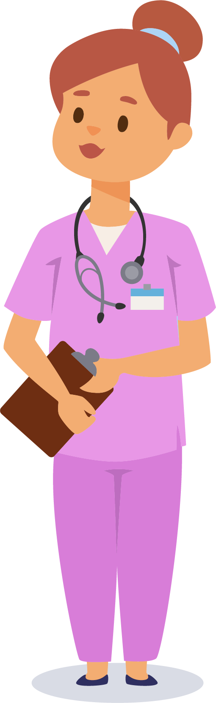

Camila, nossa enfermeira virtual, tem como objetivo transmitir orientações sobre autocuidado para pessoas em hemodiálise.

Olá! Como você está? Estou aqui para ajudar na compreensão sobre autocuidado.
Como eu funciono:
Sou uma assistente virtual guiada por tópicos. Minhas respostas são programadas baseadas em protocolos de saúde. Para melhor interação, utilize os botões de opções ou digite palavras-chave simples (ex: "peso", "dieta").